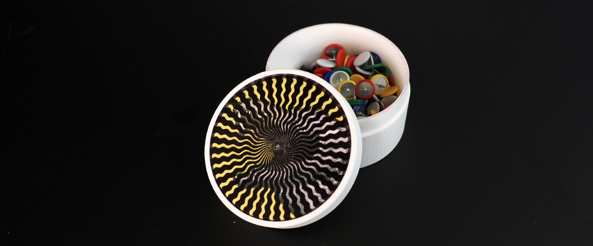
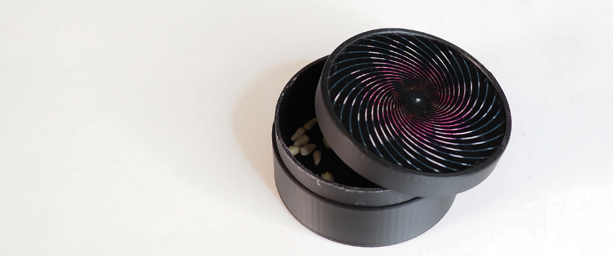
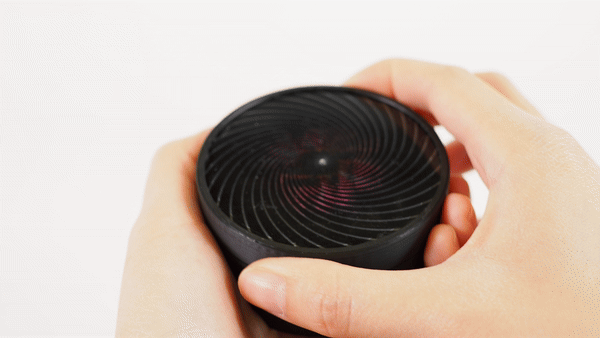
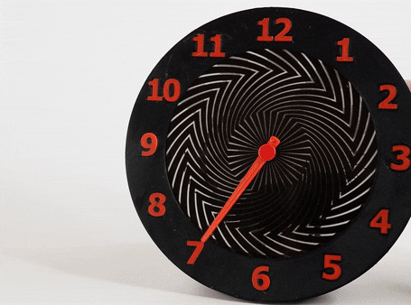
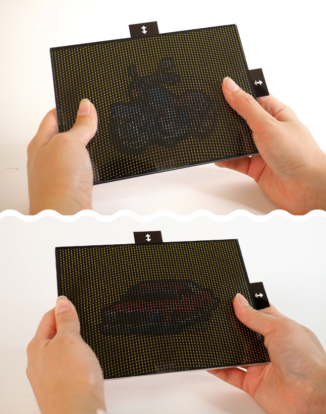
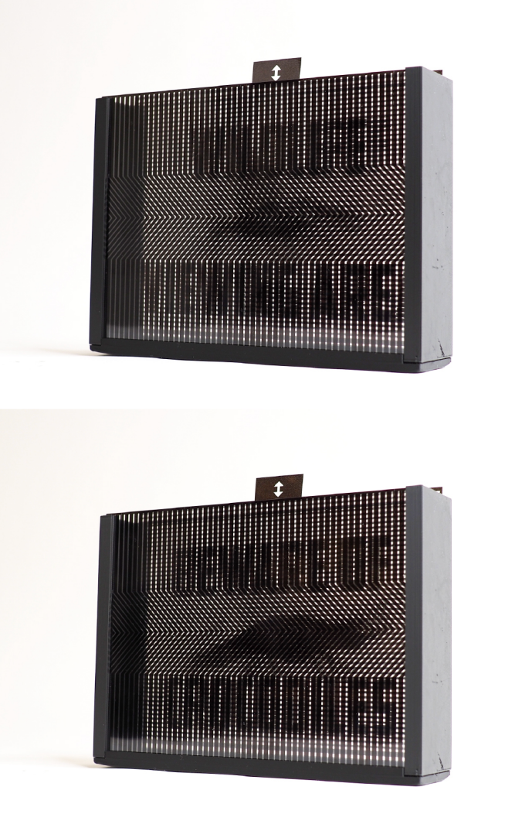

Publication
Ticha Sethapakdi, Maxine Perroni-Scharf, Mingming Li, Jiaji Li, Justin Solomon, Arvind Satyanarayan, Stefanie Mueller.
FabObscura: Computational Design and Fabrication for Interactive Barrier-Grid Animations
In Proceedings of UIST ’25.
DOI PDF Video Code
Video
Press
MIT News Video
FabObscura: Computational Design and Fabrication for Interactive Barrier-Grid Animations


We present FabObscura: a system for creating interactive barrier-grid animations, a classic technique that uses occlusion patterns to create the illusion of motion. Whereas traditional barrier-grid animations are constrained to simple linear occlusion patterns, FabObscura introduces a parameterization that represents patterns as mathematical functions. Our parameterization offers two key advantages over existing barrier-grid animation design methods: first, it has a high expressive ceiling by enabling the systematic design of novel patterns; second, it is versatile enough to represent all established forms of barrier-grid animations.
Using this parameterization, our computational design tool enables an end-to-end workflow for authoring, visualizing, and fabricating these animations without domain expertise. Our applications demonstrate how FabObscura can be used to create animations that respond to a range of user interactions, such as translations, rotations, and changes in viewpoint. By formalizing barrier-grid animation as a computational design material, FabObscura extends its expressiveness as an interactive medium.

INTRODUCTION
Physical occlusions, or barriers, are integral components of our daily environments, manifesting as window blinds, curtains, fencing, packaging, and architectural facades. Historically, barriers have also played a role in animation through aptly-named barrier-grid animations, which employ occlusion patterns to encode animation frames and produce the illusion of movement. Conceived in the 19th century, barrier-grid animations offer a means of presenting dynamic content without relying on electronics or advanced materials. In the earliest forms of barrier-grid animations, users “played” the animation by sliding a striped transparent overlay across an interlaced image that encodes the animation frames.
Over the years, barrier-grid animations have been adapted to accommodate a range of materials, form factors, and interactions. Visual artists and designers have leveraged the technique to create a variety of visually dynamic interactive artifacts, from books with illustrations that animate as you turn the page, to analog clocks with dynamic faces that shift with each tick, to 10-foot-tall murals that morph as you walk past them. These applications demonstrate how barrier-grid animations can be designed to respond to different interaction modalities: translations, rotations, and changes in viewpoint.
Although barrier-grid animations offer a promising approach for turning physical occlusions into dynamic design materials, they currently exhibit a very limited visual vocabulary. Designs predominantly rely on linear occlusion patterns (i.e., straight vertical, horizontal, or radial lines), which constrains the range of achievable visual effects and motion qualities. While some experienced optical artists like Rufus Butler Seder and Gianni Sarcone have developed a handful of novel barrier-grid designs as part of their creative practice, their methods remain as tacit knowledge that is neither formalized nor easily reproducible without significant domain expertise.
The absence of systematic design methods and prototyping tools fundamentally constrains what creators can achieve with barrier-grid animations. Designers are caught between either using specialized tools that restrict creative exploration, or general-purpose software operate at incorrect levels of abstraction. Several online tools exist for creating barrier-grid animations. However, each is tailored to a single type of animation and prevents users from designing novel patterns or exploring different animation styles. Alternatively, users may construct animations manually with imaging software such as Adobe Photoshop—however, such general-purpose tools operate at the pixel level rather than shape the higher-level patterns and behaviors that govern barrier-grid animations. This discrepancy makes iterative exploration challenging and inhibits creative experimentation with the medium.
Current limitations in barrier-grid animation creation processes pose substantial barriers to entry for both novices exploring the medium and experienced designers seeking to advance it as a form of visual expression. This presents an opportunity for computational tools that can both lower the threshold for newcomers and raise the expressive ceiling for seasoned artists, enabling barrier-grid animations to be more broadly adopted as a design material.
This paper introduces FabObscura, a design and fabrication system for interactive barrier-grid animations. By identifying and formalizing the canonical properties of barrier-grid animations, we derive a novel parameterization that significantly extends the technique's expressive capabilities. Our parameterization enables a computational design and fabrication workflow for designers to experiment with and create new barrier-grid animation forms without domain expertise. In contrast to existing workflows, our technique supports a high expressive ceiling (i.e., it provides a means of systematically creating new barrier designs) and low-viscosity (i.e., it allows users to explore designs under different representations with low friction). To demonstrate how FabObscura enhances the expressivity of physical objects, we present six fabricated barrier-grid animations integrated into various form factors.
Our contributions are:
- A novel parameterization of barrier-grid animations that enables the creation of diverse occlusion patterns;
- A design tool for authoring, visualizing, and fabricating different types of barrier-grid animations;
- A technical evaluation that quantifies the trade-offs between different pattern parameters and provides guidelines for optimal visual quality;
- Six fabricated applications that showcase how our technique can support expressive interactions and dynamic visual communication across a range of form factors.
BACKGROUND: BARRIER-GRID ANIMATIONS
FabObscura is based on the principles underlying barrier-grid animations, which are so-called for their use of occlusions, or “barriers”, to selectively hide or reveal portions of an animated sequence. In this section, we explain the working principles of barrier-grid animations, survey their known variants, and identify canonical properties that unify all variants.
Basic Construction
Fundamentally, barrier-grid animations have two components: an interlaced image and a barrier pattern. A barrier represents a striped pattern composed of opaque and transparent regions. An interlaced image is a composite image that encodes an animation sequence by slicing multiple individual frames into equally sized strips and stacking them in an alternating sequence (Fig. 2).
For a barrier-grid animation to work correctly, the interlaced frame strips and barrier must be properly aligned so that, when the barrier is placed on top, it masks all frames except for the one currently being viewed. This imposes two design constraints:
- If the interlacing direction determines the orientation of the interlaced image strips, the barrier stripes must follow the same direction to ensure proper masking;
- In an animation with n frames, if each interlaced frame strip has width w, the barrier must alternate between transparent stripes of width w and opaque stripes of width (n − 1)w to ensure that only one frame is visible at a time.
Violating either of these constraints results in an undesired effect called ghosting. This occurs when portions of frames other than the intended frame of interest are visible at a given view, resulting in faint ghost-like interference patterns becoming visible on top of the main image shown.
Next, we present a typology of barrier-grid animations, categorizing them based on their interaction mechanisms and the distinct visual effects that they produce.
Sliding Animations
The oldest and most widely-used variant of barrier-grid animations relies on sliding interactions. Typical sliding animations make use of horizontally- or vertically-oriented barriers. The barrier's orientation determines the interlacing direction as well as the primary axis of motion: when a barrier is placed on top of an interlaced image, sliding it along the interlacing direction causes the transparent regions to sequentially reveal different portions of the underlying animation frames (Fig. 3). Continuing to slide the barrier makes the animation loop back to the first frame after revealing the last.View-Dependent Animations
While traditional barrier-grid animations require users to physically slide its constituent components, artists devised a technique that supports view-dependent interactions. View-dependent animations maintain a fixed separation between the interlaced image and barrier layers within a connected structure. As users change their viewing angle—either by repositioning themselves or tilting the structure—the resulting parallax effect produces the same sequential animation as sliding animations (Fig.4).Although view-dependent animations have the advantage of providing a “hands-free” interaction experience, they also introduce new alignment challenges. Increasing the distance between the interlaced image and barrier increases the amount of parallax, meaning that a smaller change in the viewing angle is required to advance to the next frame. However, as the distance between the interlaced image and barrier layers increases, they gradually become more misaligned due to perspective effects (e.g., the barrier may appear much larger than the interlaced image). Thus to mitigate ghosting, designers must manually adjust the size of the interlaced image to maintain proper alignment between layers.
Rotational Animations
As previously discussed, the barrier orientation and corresponding interlacing direction determine the animation's direction of motion. Whereas sliding and view-dependent animations are linearly interlaced along the x or y axes, we can also perform radial interlacing along the polar axis. This yields a construction that facilitates rotational interactions. Under this scheme, the barrier pattern and interlaced image have radial symmetry and comprise wedge-shaped segments that extend from the center (Fig. 5). Rotating a barrier clockwise around the center advances the underlying animation.Canonical Properties
From our analysis of barrier-grid animation types, we see that the barrier pattern significantly influences the aesthetics of the animation and achievable visual effects. However, existing patterns are largely limited to straight horizontal, vertical, or radial lines. Generalizing these patterns into more diverse forms is therefore key to extending expressivity.
The first step to generalizing barrier-grid animations is defining a set of canonical properties that any barrier pattern variant must satisfy. From closely studying the variants and their design constraints, we identified three fundamental properties:
- Seriality: The pattern sequentially reveals corresponding strips of different frames as it moves along a fixed direction;
- Periodicity: The pattern repeats at regular intervals and aligns precisely with the interlacing period, returning to the first frame after the last;
- Discreteness: The transparency distribution of the pattern ensures that at most one frame is fully visible at each time step.
Together, these properties provide a conceptual framework for the space of valid barrier patterns that applies to all types of barrier-grid animations.
DESIGN SPACE
In this section, we establish the design space that guides our computational approach to barrier-grid animation.
Parameterizing Patterns
Guided by our established canonical properties, we can build a parameterization that encompasses the space of valid barrier patterns. To satisfy seriality, the barrier pattern must be aligned to the interlacing path, i.e., the shape of each barrier segment must match the shape of each interlaced strip. To satisfy periodicity, each barrier segment must be duplicated multiple times to form a repeating pattern. Thus, we can conceptualize any barrier pattern as a sequence of pattern units that are repeatedly stacked along the axis corresponding to a given direction of motion. We preserve discreteness by making the stack alternate between opaque and transparent units.
Defining the Shape of a Pattern Unit. Consider a linear (i.e., sliding or view-dependent) animation where the direction of motion is vertical. This is equivalent to movement along the y-axis in Cartesian space. For an interlacing to be valid, observe that each interlaced strip must be uniquely identifiable at any x position—meaning a vertical line passing through the image at any x coordinate must intersect each strip exactly once. This property is analogous to the “vertical line test” in mathematics, which determines whether a graph represents a function: for each unique input (x-value), there must be exactly one output (y-value).
Conveniently, this mapping between valid interlaced strips and functions allows us to parameterize our pattern unit with any mathematical function \( f \) that describes its path as it moves along the x-axis (Fig. 6). For example, the function \( f(x) = C \) (where C is a constant) creates straight horizontal lines, while \( f(x) = \sin(x) \) produces a wavy pattern.
Figure 6. Examples of valid patterns for linear animations.
The same one-to-one mapping principle holds for rotational animations, though now expressed in polar coordinates rather than Cartesian space. In this framework, the path of each radial line in the pattern is governed by a function f that defines the local inclination (i.e., the turning angle) as a function of r, the radial distance measured outward from the center of rotation. As r increases, f(r) controls how much the line bends at each step (Fig. 7). For example, the function \( f(r) = 0 \) creates straight radial lines, while \( f(r) = C \) (where C is a nonzero constant) produces arcs that spiral out from the center. Importantly, any circular path centered at the origin intersects each radial line exactly once.
Figure 7. Examples of valid patterns for radial animations.
Choosing the Direction of Motion. Since pattern units in rotational animations are stacked along the radial axis, their direction of motion always follows a circular path. Linear animations, on the other hand, allow us to define the direction of motion by rotating pattern units before stacking them (Fig. 8). For example, rotating a constant function \( f(x) = C \) by 90° changes the direction of motion from vertical to horizontal by transforming a horizontal striped barrier into a vertical striped barrier, while rotating by 45° makes the direction of motion diagonal.
Design Parameters. In summary, we use the following parameterization for our barrier patterns:
- Unit Function f: The mathematical function that governs the shape of each pattern unit.
- Thickness t: A value used to calculate the thickness of the opaque and transparent units. For an animation with n frames, the pattern alternates between transparent units of thickness t and opaque units of thickness (n − 1)t.
- Direction θ : The angle that determines the linear animation's direction of motion.
Our parameterization provides two key advantages over conventional methods for barrier-grid animation generation. First, it has a high expressive ceiling as it provides a framework for systematically generating entirely new forms with predictable behavior. Figure 9 shows several novel patterns alongside their corresponding functions, illustrating how different mathematical formulations extend the visual vocabulary of barrier-grid animations while preserving their core properties.

Second, as our parameterization is derived from core barrier grid animation principles, it generalizes across all barrier-grid animation variants and provides a means to switch between different representations with low viscosity. Figure 10 shows how the same unit function produces a valid animation for all three variants, which demonstrates the coherence of our parameterization across different interaction modes.

Nesting Animations
Interlaced images can be used to encode not only sequences of animation frames, but sequences of entire barrier-grid animations. This enables nested animations, where one barrier-grid animation is embedded within another (Fig. 11). In such compositions, multiple barrier patterns operate together, each selectively revealing different layers of a complex interlaced image. A primary barrier may determine which animation is visible, while secondary barriers control the progression of frames within that animation.
Nested animations can encode a variety of interactions within a single interlaced image. For instance, we can apply linear interlacing to encode multiple linear animations (Fig. 11a), or even to encode radial animations, enabling playback that responds to both translation and rotation (Fig. 11b). Conversely, we can use radial interlacing to encode linear animations, producing sequences that require rotation to select an animation and translation to play it.
Theoretically, we can continue this nesting process indefinitely to create animations within animations within animations. But in practice, each nesting operation adds another barrier that partially occludes the underlying image and causes progressive loss of visual information. We quantify this trade-off in more detail in our technical evaluation.
FABOBSCURA: TOWARDS COMPUTATIONALLY DESIGNING BARRIER-GRID ANIMATIONS
We developed FabObscura as a computational design tool that enables users to explore parts of our design space and construct different types of barrier-grid animations. Our tool has two main components: the pattern editor (Fig. 12a) which provides controls for specifying the animation's design parameters, and the interactive canvas (Fig. 12b) which provides visual feedback and direct interaction with the resulting animation.
Designing Animations
Our tool uses the high expressive ceiling of our parameterization to provide an exploratory design process where users can construct valid animations from any mathematical function.
Consider Figure 12, which shows the main FabObscura interface. 1 To begin, the designer selects their animation sequence, which is a folder containing an image sequence of animation frames. The animation sequence serves as the visual content revealed through the barrier pattern. 2 As the designer enters the pattern unit function, 3 the interface updates a plot that visualizes the mathematical expression. This real-time feedback allows designers to develop intuition about how different functions map to visual outcomes. 4 Next, the designer can adjust the resolution of their animation. Lower resolution animations use coarser interlacing that requires larger movements to advance between frames, while higher resolution animations have finer interlacing that makes them more sensitive to movement. 5 Finally, the designer can specify the direction of motion by applying a rotation. 6 After confirming the pattern parameters, the system updates the interactive canvas with the animation and specified barrier pattern.

Interacting with Animations
The low viscosity of our parameterization allows our tool to provide an interactive canvas where designers can see how their animations perform under different barrier-grid configurations. It supports three interaction modes, each corresponding to a barrier-grid animation variant (Fig. 13).
Sliding. The sliding interaction mode creates animations that respond to sliding movements. FabObscura simulates this interaction by making the barrier track the cursor's y-coordinate (Fig. 13a). To ensure proper frame masking, the tool restricts the sliding interaction to follow the pattern's predefined direction of motion.
Viewpoint. The viewpoint interaction mode uses motion parallax to create view-dependent animations (Fig. 13b). In this mode, FabObscura simulates the physical separation between barrier and interlaced image layers with a 3D preview. Designers can test different viewing angles by moving their cursor to virtually tilt the animation, and right-clicking locks the current position.
Since view-dependent animations operate in 3D space, the viewpoint interaction mode has additional sliders for adjusting the viewing distance from the camera, field of view, and distance between the barrier and interlaced layers. As the user adjusts these values, the tool corrects any misalignments that may arise from perspective by automatically resizes the interlaced image (which is further away from the camera) to align with the barrier.
Rotation. The rotation interaction mode creates animations that respond to rotational movements (Fig. 13c). FabObscura simulates rotational interactions by automatically turning the barrier based on the angle between its center and the cursor's position.
Experimenting with Nested Animations
While nested animations can seem initially counterintuitive, FabObscura provides an abstraction that helps designers build intuition for and experiment with these hierarchical structures. Clicking +Add creates a second set of pattern parameters for nesting, while -Del reverts to standard pattern generation.
Consider Figure 14, which shows the interface for creating nested animations. 1 The designer selects two animations to nest. 2 The top row of pattern parameters controls the settings for each individual animation within the nest, 3 while the bottom row defines the pattern that determines how users switch between these animations. 4 By default, the direction for the nesting barrier is set to be orthogonal to the animation direction, but the designer can adjust this value as desired. Once the designer confirms the parameters, the system creates a nested animation that uses a sliding barrier as the animation mask.
As with standard animations, the interactive canvas allows designers to interface with the nested animation under different interaction modes. Nested animations involve moving multiple barrier layers to access different levels of the nesting hierarchy. The designer can switch between the barrier being manipulated with the tab key (Fig. 15).
Figure 15. Designers access different levels of the nesting hierarchy by switching between the barrier being manipulated.
Outputs
Each time the user generates their animation, FabObscura outputs image files for each animation type. For standard animations, the system produces six raster images: one barrier pattern and one interlaced image for each of the three animation variants. For nested animations, the system produces one additional barrier that stores the nested pattern.
APPLICATIONS
To showcase how FabObscura can extend the visual expressivity of physical objects, we use our system to fabricate a range of animations and explore potential applications.
Objects with Reconfigurable Appearances
Barrier-grid animations can be used to dynamically reconfigure an object's appearance to match changing contexts. To demonstrate this capability, we designed a reconfigurable coaster (Fig. 16) that accommodates different beverage types. The coaster features three distinct designs: a coffee mug, a glass of water, and a cocktail glass. By sliding the coaster's outer sleeve, users can immediately change the displayed design to visually complement the beverage currently being served. For a contemporary aesthetic, we chose a modulated triangle wave function to produce a chevron-like pattern. This not only enhances the coaster's visual appeal but also demonstrates how barrier patterns themselves can serve as decorative elements that contribute to an object's design language.

Figure 16. A coaster whose appearance can be reconfigured to complement its beverage.
Responsive Design
As barrier-grid animations rely on viewing angle and positional changes that occur naturally in everyday objects, we can use them to create responsive designs across diverse physical contexts.
Dynamic Containers. We designed two containers that animate as the user opens them by turning the lids counterclockwise. The first container depicts a three-frame animation of a snapping crocodile (Fig. 17). We stylistically emphasize the crocodile's action by interlacing it with a high frequency sine wave. The second container shows a three-frame animation of a flower gradually opening (Fig. 18). We create a soft spiraling effect that smoothly radiates out from the center by interlacing the frames with a radial function with constant curvature. Despite both using rotational motions, each container conveys a distinct aesthetic through its animation and interlacing pattern. These examples show how animation enhances visual communication in physical designs: a snapping crocodile for a jar of sharp thumb tacks, and a blooming flower for a box of delicate seeds.

Figure 17. A thumb tack box with a snapping crocodile lid.


Figure 18. A seed box that blooms each time it is opened.
Animated Clock Face. We made a clock face that holds a six-frame animation of a mouse on a wheel (Fig. 19). As the second hand moves, the mouse races against time and scurries along the walls of the clock. We applied a staircase function to create an arrow-like radial barrier pattern that emphasizes the clockwise motion. This example illustrates how FabObscura designs can work alongside common mechanisms, without compromising their functionality, by using shared interaction patterns.

Figure 19. A clock design with a mouse that runs as the clock ticks.
Multimodal Interactions
Nested barrier-grid animations can support multimodal interactions that are not easily achievable with other passive display methods.
Low-Tech Interfaces. We explored how nested animations can be used as low-tech interfaces that mimic digital interactions. We designed an interactive display that nests two four-frame animations showing quarter-turn views of low-poly car and motorcycle 3D models (Fig. 20). Moving the barriers vertically switches between the two models, while moving horizontally reveals different angles of the selected vehicle. This interaction mimics digital 3D model exploration interfaces, where horizontal dragging orbits around objects and vertical scrolling switches to different views.


Figure 20. An interactive low-tech display that encodes quarter-turn views for two 3D models.
Reconfigurable View-Dependent Signage. Our second nested animation combines a view-dependent animation with a sliding barrier to create a reconfigurable sign that animates as viewers walk past it (Fig. 21). We nested two six-frame animations: one displaying “Wildlife Viewing Area” alongside a flying pelican, and another showing “Beware of Crocodiles” beside a slinking crocodile. Vertically sliding the nested barrier pattern switches between the message being displayed. For the inner barrier that controls the underlying animations, we used a piecewise function that bows outward in the middle while remaining straight at the edges. This directs visual interest toward the center where the animals are moving, while maintaining text legibility in the peripheral regions.


DISCUSSION
By understanding how barrier-grid animations can be constructed through a unified mathematical framework, FabObscura enables more expressive and complex animations than previously possible. This section discusses the design insights emerging from our technical evaluation, acknowledges the limitations of our approach, and outlines directions for future work.
Design Best Practices
Guided by our technical evaluation, we propose the following best practices for constructing high-quality barrier-grid animations:
- Use high contrast designs with distinct silhouettes. High-contrast designs with distinct silhouettes are versatile because they are recognizable even as visual fidelity decreases. This makes them well-suited for a variety of constructions, including nested configurations that tend to exhibit lower fidelity than their non-nested counterparts.
- Use moderate barrier spacings for nested configurations. Nested configurations exhibit high variance at lower barrier spacings and degrading performance at higher spacings. In singly-nested configurations, our evaluation shows that the optimal spacing is roughly 0.5-0.8% of the design's width.
- For view-dependent animations, apply perspective correction for close viewing or thick structures. While it is less critical when the viewing distance is large or the layers are closely spaced, perspective correction becomes especially important at close range or when there is significant separation between layers.
Limitations and Future Work
While FabObscura provides a foundation for designing barrier-grid animations, the current prototype of the system does not exhaustively cover the design space of our parameterization. For instance, the interface can only nest two animations even though it is algorithmically possible to create more complex constructions. Future implementations could support deeper nesting hierarchies while providing visualization tools to help users negotiate the design trade-offs that accompany each additional layer.
One part of the design space that we do not explore in-depth is the unit function representation. For example, rather than assuming that patterns have a fixed resolution throughout, we can make the resolution vary depending on the pattern segment—or, instead of assuming that unit functions are continuous lines, we can depict them as a set of discrete shapes (Fig. 26). This opens possibilities for more expressive pattern designs that cannot easily be described by continuous functions alone. Future work could investigate other representations for pattern units and explore their visual and interactive affordances.
Finally, while our technical evaluation provides valuable quantitative insights into animation quality, it does not capture how hyperparameter choices may affect user interaction. A comprehensive user study that qualitatively assesses the perceptual and interactive impact of varying hyperparameters is a promising direction for future work.
CONCLUSION
We presented FabObscura, a process for systematically designing novel interactive barrier-grid animations. By recontextualizing barrier-grid animations as parameterized mathematical functions, FabObscura preserves the canonical properties of barrier-grid animations while giving them infinite expressivity.
One might wonder why it is important to revisit early art forms like barrier-grid animations—after all, since their inception, there have been centuries of developments in animation, display technologies, and dynamic materials. But in the same way that early film techniques continue to inform modern cinematography, barrier-grid animations lay the foundation for modern processes such as lenticular printing and autostereoscopic displays. Perhaps by providing a process for making barrier-grid animations more expressive, we can also inspire new approaches for the technologies that come after them.
ACKNOWLEDGMENTS
We thank Josh Pollock, Dylan Wootton, and Matt Beaudouin-Lafon for reviewing paper drafts and providing valuable feedback. We also thank Lyvia Kenfack for their help with early prototypes of the system and Rufus Butler Seder for providing us with animations.